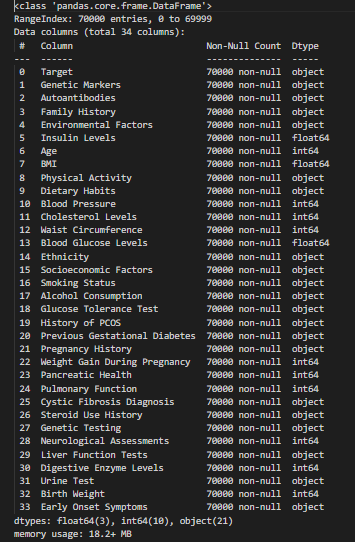
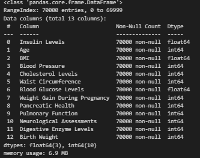

What is Clustering?
Clustering is an unsupervised learning technique used to group similar data points. We use three clustering methods:
- K-Means Clustering - Divides data into k-groups based on similarity.
- Hierarchical Clustering (HClust) - Builds a hierarchy of clusters.
- DBSCAN - Identifies clusters based on density and detects outliers.

Clustering and Distance Metrics - Brief Overview
Clustering is an unsupervised learning method that groups similar data points based on a predefined similarity measure.
Clustering Distance Metrics
Distance metrics like Euclidean distance, Cosine similarity, and Manhattan distance are explored to determine the most suitable clustering approach.
How Clustering is Used in This Project
Three clustering techniques K-Means, Hierarchical Clustering, and DBSCAN are applied to group diabetes data based on patterns and relationships.

GitHub Repository
View Clustering Code on GitHub ↗Dataset Used
We use the cleaned diabetes dataset for clustering. Below is a preview:
 Download Cleaned Dataset
Download Cleaned Dataset
Data Preprocessing Steps
1. Load the Dataset
The cleaned diabetes dataset is loaded before clustering.
2. Dropping Non-Numeric Columns
Only numerical features are retained for clustering.
3. Standardizing the Columns
StandardScaler is applied to normalize feature values.

K-Means Clustering
Below is the K-Means clustering visualization with the optimal number of clusters:
The K-Means clustering visualization displays data points grouped into three distinct clusters using Principal Component Analysis (PCA) for dimensionality reduction. Each color represents a separate cluster identified by the K-Means algorithm, highlighting natural groupings in the dataset. The x-axis and y-axis correspond to the first two principal components, preserving the most significant variance in the data. This clustering approach helps in identifying underlying patterns and similarities between data points, aiding in better data segmentation and analysis.
Silhouette Score Analysis
Silhouette Score was used to determine the best number of clusters.

The silhouette score plot helps determine the optimal number of clusters (k) for K-Means clustering. The y-axis represents the silhouette score, which measures how well-defined the clusters are, while the x-axis represents different values of k. Higher scores indicate better clustering. As observed, the silhouette score is highest for k=2 and k=3, suggesting that these values provide the most meaningful clustering structure in the dataset. The sharp decline in score beyond k=3 indicates that adding more clusters may not significantly improve the separation.
Selected 3 Optimal k Values: [2, 3, 4]
K-Means on different cluster
The visualization displays the results of K-Means clustering applied to the dataset with different values of k (number of clusters). The leftmost plot (k=2) separates the data into two broad groups, but lacks finer distinctions. The middle plot (k=3) provides a more meaningful separation, aligning well with the natural structure in the data. The rightmost plot (k=4) introduces an additional cluster, potentially leading to over-segmentation. Based on the silhouette score analysis, k=3 appears to be the most optimal choice, balancing cohesion and separation.
Hierarchical Clustering
Hierarchical clustering dendrogram is shown below:
The hierarchical clustering dendrogram visually represents the hierarchical relationships among data points. Each merge represents clusters combining based on their similarity, with the y-axis (distance) showing how dissimilar two clusters are before merging. The large height of the final merges indicates that three distinct clusters are optimal, which aligns with previous clustering results. This approach helps in understanding natural data groupings and is useful when the number of clusters is unknown.
Hierarchical clustering using cosine similarity.

This dendrogram represents hierarchical clustering based on cosine similarity, a metric particularly useful for high-dimensional data. Instead of Euclidean distance, cosine similarity measures the angle between vectors, making it effective for text data and feature-rich datasets. The clustering structure indicates that three distinct groups emerge naturally. Cosine similarity-based clustering is valuable when dealing with non-linear relationships and sparse data, ensuring meaningful groupings in complex datasets.
DBSCAN Clustering
DBSCAN clustering was applied to detect dense regions and outliers.
The DBSCAN (Density-Based Spatial Clustering of Applications with Noise) algorithm was used to identify dense clusters and detect outliers in the dataset. Unlike K-Means, DBSCAN does not require specifying the number of clusters beforehand. The plot visualizes clusters using two principal components, where different colors represent distinct clusters. Points labeled as "-1" indicate noise or outliers that do not belong to any cluster. This method is particularly useful for datasets with irregular shapes and varying densities, making it a powerful tool for anomaly detection and pattern recognition.
Performance Comparison
| Method | Performance | Scalability | Interpretability |
|---|---|---|---|
| K-Means | Fast & Efficient | Scalable | Good for spherical clusters |
| Hierarchical | Slower for large data | Less scalable | Useful for hierarchy |
| DBSCAN | Handles noise well | Not good for high dimensions | Great for irregular clusters |
Clustering Conclusion
K-Means Clustering:
- The silhouette score analysis helped identify the optimal number of clusters, with three clusters performing well.
- The 2D PCA projection of K-Means clustering shows well-separated groups, indicating effective partitioning.
- The method works well for spherical clusters but may struggle with more complex, non-linear structures.
Hierarchical Clustering:
- The dendrogram visualization indicates the hierarchical relationships between data points.
- Using cosine similarity improved cluster separation compared to Euclidean distance.
- However, hierarchical clustering is computationally expensive for large datasets and may not scale efficiently.
DBSCAN Clustering:
- DBSCAN effectively identifies dense clusters and outliers, making it suitable for datasets with varying density.
- The presence of outliers (noise points labeled as -1) indicates that the dataset contains regions of lower density.
- However, parameter tuning (epsilon and min_samples) is crucial for obtaining meaningful clusters.
Overall Insights:
- K-Means is efficient for well-separated, compact clusters but struggles with varying density.
- Hierarchical Clustering provides interpretability but is computationally expensive for large datasets.
- DBSCAN handles noise and irregular cluster shapes well but requires careful parameter selection.
- Each clustering method has its strengths and limitations, and the choice of technique depends on dataset characteristics and the problem at hand.